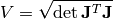

Integration¶
This chapter doesn’t assume any knowledge about differential geometry. The most versatile way to do integration over manifolds is explained in the differential geometry section.
General Case¶
We want to integrate a function  over a
over a  -manifold in
-manifold in  , parametrized
as:
, parametrized
as:

then the integral of  over
over  is:
is:

where  is called a Gram matrix and
is called a Gram matrix and  is a Jacobian:
is a Jacobian:

The idea behind this comes from the fact that the volume of the -dimensional
parallelepiped spanned by the vectors

is given by

where is an  matrix having those vectors as its column
vectors.
matrix having those vectors as its column
vectors.
Example¶
Let’s integrate a function  over the surface of a sphere in 3D
(e.g.
over the surface of a sphere in 3D
(e.g.  and
and  ):
):
![\mathbf{\varphi}(\theta, \phi) = \mat{
r\sin\theta\cos\phi \cr
r\sin\theta\sin\phi \cr
r\cos\theta \cr
}
{\bf J} = \mat{
-r\sin\theta\sin\phi & r\cos\theta\cos\phi \cr
r\sin\theta\cos\phi & r\cos\theta\sin\phi \cr
0 & -r\sin\theta \cr
}
{\bf G} = {\bf J}^T {\bf J} =
\mat{
-r\sin\theta\sin\phi & r\sin\theta\cos\phi & 0 \cr
r\cos\theta\cos\phi & r\cos\theta\sin\phi & -r\sin\theta \cr
}
\mat{
-r\sin\theta\sin\phi & r\cos\theta\cos\phi \cr
r\sin\theta\cos\phi & r\cos\theta\sin\phi \cr
0 & -r\sin\theta \cr
}
= \mat {
r^2\sin^2\theta & 0 \cr
0 & r^2 \cr
}
\det{\bf G} = r^4\sin^2\theta
\sqrt{\det{\bf G}} = r^2\sin\theta
\int_M f(x, y, z) \d S = \int_{\R^n} f(r\sin\theta\cos\phi,
r\sin\theta\sin\phi, r\cos\theta)\, r^2\sin\theta\,\d\theta\,\d\phi
=
= \int_0^\pi\d\theta \int_0^{2\pi}\d\phi\, f(r\sin\theta\cos\phi,
r\sin\theta\sin\phi, r\cos\theta)\, r^2\sin\theta](../../images/math/a06a03dfbd7ab3f902831c51f008bbd2077bb254.png)
Let’s say we want to calculate the surface area of a sphere, so we set  and get:
and get:


![\det{\bf G} = \det {\bf J}^R{\bf J} =
=\det(\cdots)^2 + \det(\cdots)^2+\cdots+\det(\dots)^2 =
=\left|\det\mat{
{\partial\mathbf{\varphi}\over\partial t_1} &
{\partial\mathbf{\varphi}\over\partial t_2} &
\cdots &
{\partial\mathbf{\varphi}\over\partial t_k} &
{\bf e}_1 \cr
\vdots & \vdots & \vdots & \vdots & {\bf e}_2 \cr
\vdots & \vdots & \vdots & \vdots & \vdots \cr
\vdots & \vdots & \vdots & \vdots & {\bf e}_n \cr
}\right|^2 \equiv |\omega_\varphi|^2
\d S = |\omega_\varphi|\,\d t_1\,\d t_2\cdots\d t_k](../../images/math/6231480525305fbc96793b88e6dd03dfe477da7a.png)
 is a generalization of a vector cross product. The
is a generalization of a vector cross product. The
 symbol means a determinant of a matrix with one row removed
(first term in the sum has first row removed, second term has second row
removed, etc.).
symbol means a determinant of a matrix with one row removed
(first term in the sum has first row removed, second term has second row
removed, etc.).

 we get:
we get:
 ” term is missing in the sums above.
” term is missing in the sums above.